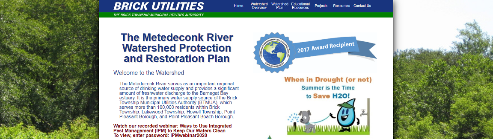

Back
Educational Website Development
Seeing the previous website design, this project was initiated with a goal of updating the website to something more modern, clean, and functional. This project involved remaking a portion of the company website, specifically with the goal of providing educational information to the public. The design of the new website was self-developed. The website was developed using HTML, CSS, and Javascript. Updates to the website are periodic, adding and removing events and images. The website can be viewed here.